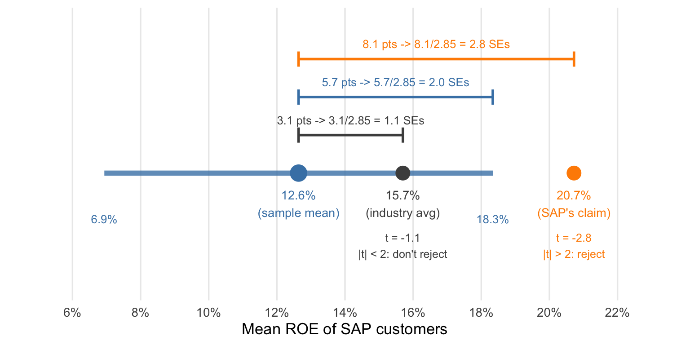

17 Hypothesis Tests and p-values
The confidence interval from the last chapter gives a range of plausible values for \(\mu\), the population mean ROE of SAP customers. Under the random-sampling model, that interval runs from about 6.9% to 18.3%. We can also ask whether the data are consistent with a specific value, such as the industry benchmark of 15.7%.
Definition 17.1: Hypothesis test and null hypothesis
A hypothesis test measures the evidence against one specific claim about a parameter, called the null hypothesis. The null hypothesis usually represents a default: no difference between two groups, no difference in outcomes between a treatment and a placebo, a mean equal to some benchmark.
In the SAP example, we have at least two null hypotheses we could test:
- Null hypothesis 1: SAP customers’ mean ROE equals the industry average of 15.7%. This lets us evaluate Nucleus’s claim that SAP customers are less profitable.
- Null hypothesis 2: SAP customers’ mean ROE equals the 20.7% implied by SAP’s marketing claim.
We’ll start with the industry benchmark.
Step 1: Posit a null hypothesis and its alternative
We write the null hypothesis as \(H_0:\mu=15.7\%\) and the alternative hypothesis as \(H_A:\mu\ne15.7\%\). Here \(\mu\) is the population mean; the observed sample mean is our evidence about it. This two-sided test considers departures in either direction. Nucleus’s claim concerns lower profitability, but we are asking the broader question of whether SAP customers differ from the benchmark.
Think of the null hypothesis as the defendant in a criminal trial in which you are a juror. You begin by presuming innocence, regardless of what you actually believe. In a hypothesis test, we likewise start by assuming the null hypothesis is true and ask whether the evidence is inconsistent with it.
Exercise 17.1: State the hypotheses
A bottling team wants to assess whether its population mean fill volume differs from the 500-milliliter label claim in either direction. Let \(\mu\) denote that population mean. State the null and alternative hypotheses. Why should they refer to \(\mu\) rather than the observed sample mean?
Solution
The null is \(H_0:\mu=500\) milliliters and the alternative is \(H_A:\mu\ne500\) milliliters. The claim concerns the population mean, which is unknown; the sample mean is the observed evidence used to assess it.
Step 2: Collect and evaluate evidence
During the trial, the prosecutor presents evidence against the defendant — the null hypothesis. The defense provides alternative explanations for that evidence. Are the data consistent with the null hypothesis?
The “prosecution” has already shown us that the estimated average ROE for SAP firms is 12.64%, or 3.1 percentage points less than the posited value of 15.7%. One explanation for the discrepancy is that SAP customers are truly less profitable on average.
The “defense” provides an alternative explanation: A difference that large could be due to chance variation when we use a sample of 81 companies instead of the entire population of 30,000. The typical deviation of the sample mean from the true mean is measured by the standard error, which we computed in the last chapter as about 2.85 percentage points.
Let \(\mu_0\) denote the value specified by the null hypothesis: here, 15.7%. Our job as jurors is to compare the observed difference, \(\bar{x}-\mu_0\), with the estimated standard error. The test statistic makes that comparison; for a population mean, we use the t-statistic:
\[ T = \frac{\bar X - \mu_0}{SE(\bar X)}, \qquad t = \frac{12.64 - 15.7}{2.85} = -1.07. \]
The capital \(T\) denotes the statistic across repeated samples; the lowercase \(t\) is the value we computed from this sample. Like a z-score, it measures how many standard errors the sample mean is from the hypothesized value. Here the sample mean is about 1.07 standard errors below the industry benchmark. With the iid assumptions and adequate sample size from the last chapter, the Central Limit Theorem gives an approximately standard normal distribution when the null hypothesis is true:
\[ T = \frac{\bar X - 15.7}{SE(\bar X)}\approx N(0,1). \]
If the null hypothesis is true, the \(t\)-statistic is close to zero in most samples. We should see \(t\)-statistics bigger than 2 or less than -2 only about 5% of the time, and values bigger than 3 or less than -3 only about 0.3% of the time.
Exercise 17.2: Measure the discrepancy
An invented iid sample of 100 fill volumes has mean 497 milliliters and sample SD 10 milliliters. Test against a population mean of 500 milliliters. Assume the normal approximation for the sample mean is adequate.
Compute the estimated SE and the observed \(t\)-statistic. Interpret its sign and magnitude in standard-error units.
Solution
The estimated SE is \(10/\sqrt{100}=1\) milliliter, so \(t=(497-500)/1=-3\). The sample mean is three standard errors below the hypothesized population mean.
A t-statistic of 2.4 is less compatible with the null hypothesis than a t-statistic of 1.1: values at least that far from zero occur less often when the null is true.
Definition 17.2: The p-value
The p-value is the probability, computed assuming the null hypothesis is true, of getting a test statistic (here, the \(t\)-statistic) at least as extreme as the one we observed. The smaller it is, the stronger the evidence against the null hypothesis. A small p-value means the data we got would be unusual if the null hypothesis held. For an alternative that runs in both directions, “at least as extreme” means at least as far from zero in either direction.
In courtroom terms, the p-value asks: Assuming the defendant is innocent, how likely is it we’d see evidence at least as damning as what we observed? For the SAP test, we count both tails beyond \(\pm 1.07\), as shaded in Figure 17.1:
\[ 1 - \Pr(-1.07 < T < 1.07) \approx 0.28. \]
If the population mean were the industry benchmark, about 28% of repeated samples would give a discrepancy at least this large in either direction. The p-value is not the probability that the benchmark is true.
Exercise 17.3: Count both tails
A two-sided test produces \(t=-2.5\). Under the null hypothesis and the test’s normal approximation, the area below \(-2.5\) is 0.0062 and the area above \(2.5\) is 0.0062.
Compute the p-value and describe the outcomes it counts. Does it give the probability that the null hypothesis is true?
Solution
The p-value is \(0.0062+0.0062=0.0124\). Assuming the null is true, it counts test statistics at or below \(-2.5\) or at or above \(2.5\), at least as far from zero as the observed statistic. It is a probability of these outcomes under the null, not a probability that the null itself is true.
Step 3: Reach a verdict
In a criminal trial, we don’t find defendants “guilty” or “innocent” — they’re either “guilty” or “not guilty.” A defendant can be found not guilty because the jury concludes they didn’t commit the crime, or because the evidence presented was simply too weak to find the defendant guilty beyond a reasonable doubt.
In a hypothesis test, we don’t conclude that the null hypothesis is true or false; we either reject it or fail to reject it. A sufficiently small p-value corresponds to a “guilty” verdict: we reject the null hypothesis and act as if it is false. Otherwise, we return a “not guilty” verdict and fail to reject it.
Definition 17.3: Significance level
The significance level \(\alpha\) is the p-value cutoff at which we reject the null hypothesis. At \(\alpha = 0.05\) we reject when the p-value falls below 0.05 and fail to reject otherwise. Under the normal approximation used here, that means rejecting when \(|t|\) is about 2 or more. A result that leads us to reject is statistically significant at the chosen level.
A false positive occurs when we reject a null hypothesis that is true. Under the test’s assumptions, using \(\alpha=0.05\) produces false positives in about 5% of repeated studies when the null is true. This is a long-run error rate, not the probability that a particular rejection is wrong.
We choose \(\alpha\) before examining the result. Its choice should, in principle, reflect the consequences of a false positive. A criminal trial and a civil trial have different standards of evidence because the consequences of getting the verdict wrong are more severe in a criminal trial. A smaller cutoff makes false positives less frequent, but also makes it harder to detect a real departure from the null. In practice, though, \(\alpha=0.05\) is the most common choice.
What does it mean to “fail to reject”? The observed difference is not large enough, relative to its standard error, to meet the chosen rejection threshold. This can happen in two different situations:
- We get a big observed difference from the hypothesized value and a large standard error. We can’t rule out the null hypothesis because the sample size is too small relative to intrinsic variability in ROE. Essentially, we can’t find the defendant guilty because the evidence is limited and circumstantial.
- We get a small observed difference from the hypothesized value and a small standard error. We can’t rule out the null hypothesis because the observed difference is still small relative to the standard error.
In the first case we return a “not guilty” verdict because we still have a lot of uncertainty about whether the defendant committed the crime. In the second case the same verdict comes with much less uncertainty: the data rule out large departures from the hypothesized value.
For the industry benchmark, the p-value is about 0.28, which is larger than 0.05, so we fail to reject the null hypothesis. The sample does not provide strong evidence that SAP customers’ mean ROE differs from the industry average.
WarningCommon mistake: Failing to reject does not establish the null hypothesis
Failing to reject leaves the null hypothesis consistent with the data; it does not establish that the null hypothesis is true.
Exercise 17.4: Reach a testing decision
Two invented studies test \(H_0:\mu=40\) minutes against \(H_A:\mu\ne40\) minutes for mean service time. Assume each study meets its sampling and normal-approximation assumptions. Their two-sided p-values are 0.012 and 0.28.
At significance level \(\alpha=0.05\), state the decision for each study. Does the second study establish that the population mean equals 40 minutes?
Solution
Reject the null in the first study because \(0.012<0.05\). Fail to reject it in the second because \(0.28>0.05\). The second study does not establish that the mean is exactly 40 minutes; its evidence is insufficient to rule out that value.
17.1 Connecting confidence intervals and hypothesis tests
NoteKey idea: The confidence interval collects the hypotheses you would not reject
For the two-sided test used here, the approximate 95% confidence interval contains the values we would not reject using the same two-standard-error rule: any value of \(\mu\) more than two standard errors from \(\bar{x}\) falls outside the interval and gives \(|t| > 2\), so the test rejects it. Every other value lands inside the interval, and the test fails to reject it (see Figure 17.2).
The industry benchmark sat inside the interval, so we failed to reject it. By contrast, SAP’s marketing claim implies a mean ROE of 20.7%. That value is 2.8 standard errors above the sample mean, giving \(t = -2.8\) and a p-value of about 0.005, so we reject it at the 5% level. Figure 17.2 marks both values and their distances from the sample mean in standard errors:

The confidence interval distinguishes the two situations that can lead us to fail to reject. Suppose instead that we had sampled 1,296 companies, 16 times as many as in the Nucleus study, and observed a mean ROE of 14.93%, with the same sample SD as before. The difference from the industry benchmark would be one-quarter as large. The standard error would then be one-quarter as large at 0.71 percentage points. We would get the same \(t\)-statistic of -1.07 and the same p-value of 0.28, so the hypothesis test reaches the same verdict.
The confidence interval tells us what changed. In this hypothetical study, the 95% confidence interval would run from 13.5% to 16.4%. That range allows a mean about 2.2 percentage points below the benchmark to 0.7 points above it, compared with 8.8 points below to 2.6 points above in the original study. The p-values are the same, but the larger study leaves much less uncertainty about the size of the difference.
Exercise 17.5: Check benchmarks against an interval
An invented iid study estimates a population mean processing time as 52 minutes, with estimated SE 2 minutes. Assume the normal approximation is adequate. Use the chapter’s approximate two-SE convention.
Construct the approximate 95% confidence interval. Then assess the two-sided null hypotheses \(\mu=50\) and \(\mu=45\) minutes at the approximate 5% level. Confirm each decision by computing the distance from the sample mean in SE units. State what the interval leaves plausible about the population mean.
Solution
The interval is \(52\pm2(2)=[48,56]\) minutes. The value 50 is inside, so we fail to reject it; \(t=(52-50)/2=1\). The value 45 is outside, so we reject it; \(t=(52-45)/2=3.5\). Population means from about 48 to 56 minutes remain plausible under the sampling assumptions, including 50. Failure to reject 50 does not single it out as the true mean.
17.2 Additional practice
Exercise 17.6: Reading a p-value
The grocery delivery app from Chapter 16 took a random sample of 400 orders from last month. In this invented example, the sample mean order value is $64.20 and the sample standard deviation is $38.00, so the estimated standard error is $1.90 and the two-SE interval is \([60.4,\ 68.0]\) dollars.
The app’s free-delivery promotion breaks even at a mean order value of $62. Let \(\mu\) be the mean across all of last month’s orders. Use an iid sampling approximation and assume the normal approximation is adequate. An analyst tests \(H_0:\mu=62\) against \(H_A:\mu\ne62\) and gets \(t=(64.20-62)/1.90\approx1.16\), with a p-value of about 0.25. The analyst chose \(\alpha=0.05\) before seeing the data.
Decide whether each statement is correct. Where it is not, say what is wrong and give a correct version.
- “There is a 25% chance that the mean order value is $62.”
- “If the mean order value were $62, about a quarter of random samples of 400 orders would give a t-statistic at least 1.16 away from zero, in either direction.”
- “The p-value is above 0.05, so the mean order value is $62 and the promotion exactly breaks even.”
- “A test of \(H_0:\mu=70\) would reject at the 5% level.”
- “There is a 75% chance that the promotion more than breaks even.”
- “After seeing the p-value, I changed the cutoff to \(\alpha=0.30\), so I can report a statistically significant improvement over break-even.”
Finally, suppose a sample of 1,600 orders had produced the same mean and SD. Recompute the t-statistic, the p-value, and the two-SE interval, and say what changed for the break-even decision. Under the normal approximation, the area above 2.32 is 0.0102.
Solution
- Incorrect. The mean order value is a fixed number, and the p-value is computed assuming it equals $62. The p-value is a probability about samples, given the null. It is not a probability about the null. A correct version is statement 2.
- Correct under the normal approximation. The p-value counts t-statistics at or below \(-1.16\) or at or above \(1.16\), assuming the null is true.
- Incorrect. Failing to reject leaves $62 consistent with the data, along with every other value from $60.40 to $68.00. The test does not single out $62. A correct version: “The data are consistent with mean order values both below and above break-even.”
- Correct. $70 lies outside the two-SE interval, so \(|t|>2\); here \(t=(64.20-70)/1.90\approx-3.05\). That is enough to reject at the 5% level without computing another tail area.
- Incorrect. One minus the p-value is not the probability that the alternative is true, and the two-sided alternative includes means below $62 as well as above. A correct version: “Under the null and the normal approximation, about 75% of samples would give a t-statistic between \(-1.16\) and \(1.16\).”
- The calculation \(0.25<0.30\) is correct, but the analyst changed the decision rule to obtain a rejection. The result does not meet the 5% cutoff chosen in advance. A rule fixed in advance that rejects whenever \(p<0.30\) would produce false positives in about 30% of studies when the null is true, under the test’s assumptions. The final cutoff alone does not describe the error rate of a procedure that changes its rule after seeing the result. A correct version: “At the 5% level chosen in advance, the data do not establish a departure from break-even.”
With 1,600 orders the standard error is \(38/\sqrt{1600}=0.95\), so \(t=2.20/0.95\approx2.32\), with a p-value of \(2(0.0102)=0.0204\), about 0.02. The interval is \([62.3,\ 66.1]\) dollars. The same $2.20 gap is now more than two standard errors, and we reject break-even at the 5% level. The interval says more about the size of the difference: the mean is plausibly 30 cents to $4.10 above break-even.
Exercise 17.7: Materiality as a null hypothesis
In Chapter 16’s invoice audit, 200 invoices sampled at random from 8,000 had mean overbilling $12.40 and sample SD $60. These invented summaries give an estimated standard error of about $4.24. The two-SE interval is \([3.9,\ 20.9]\) dollars per invoice, or about \([31{,}000,\ 167{,}000]\) dollars in total overbilling. Overbilling is nonnegative; an invoice that was not overbilled contributes zero to the total.
The company treats total overbilling above $50,000 as material. Let \(\mu\) denote the population mean overbilling per invoice. Use the iid approximation for this small fraction of the invoices and assume the normal approximation for the sample mean is adequate. Use \(\alpha=0.05\), chosen before examining the data.
- Convert the $50,000 threshold to a value \(\mu_0\) for the mean. State \(H_0:\mu=\mu_0\) and its two-sided alternative, compute the t-statistic and p-value, and state the decision. Under the normal approximation, the area above 1.45 is 0.0735.
- The company’s controller writes: “The test found no significant departure from the materiality threshold, so overbilling is not material.” Evaluate that sentence and give a more informative report.
- Which of the chapter’s two ways of failing to reject describes this result? Use the interval for the total to support your answer.
- Suppose a larger sample gave the same mean and SD. Using \(SE=s/\sqrt n\) and the two-SE rule, find the smallest whole-number sample size that would reject in part 1. Continue to use the iid approximation. Would collecting that many invoices guarantee rejection before seeing their overbilling amounts?
Solution
- The threshold corresponds to \(\mu_0=50{,}000/8{,}000=6.25\) dollars per invoice, so \(H_0:\mu=6.25\) and \(H_A:\mu\ne6.25\). Then \(t=(12.40-6.25)/4.24\approx1.45\), and the p-value is \(2(0.0735)=0.147\), about 0.15. We fail to reject at the 5% level.
- The sentence uses failure to reject equality with the threshold as evidence that the total is below it. The null was a total of exactly $50,000, and the two-sided alternative includes totals on either side. The interval spans both material and nonmaterial totals. A more informative report: “The estimated total overbilling is $99,200, with a two-SE interval from about $31,000 to $167,000. That range includes totals both below and above $50,000, so this sample does not settle materiality.”
- This is a large observed difference with a large standard error. The estimate is $49,200 above the threshold, but the standard error of the total is about $33,900, so that distance is only 1.45 standard errors. The interval for the total is about $136,000 wide.
- The test rejects when the $6.15 gap exceeds two standard errors: \(2(60)/\sqrt n<6.15\) gives \(n>(120/6.15)^2\approx380.73\). The smallest whole-number sample size is 381 invoices, about twice the current sample. This is conditional on getting the same mean and SD; a new sample can change both, so collecting 381 invoices does not guarantee rejection.